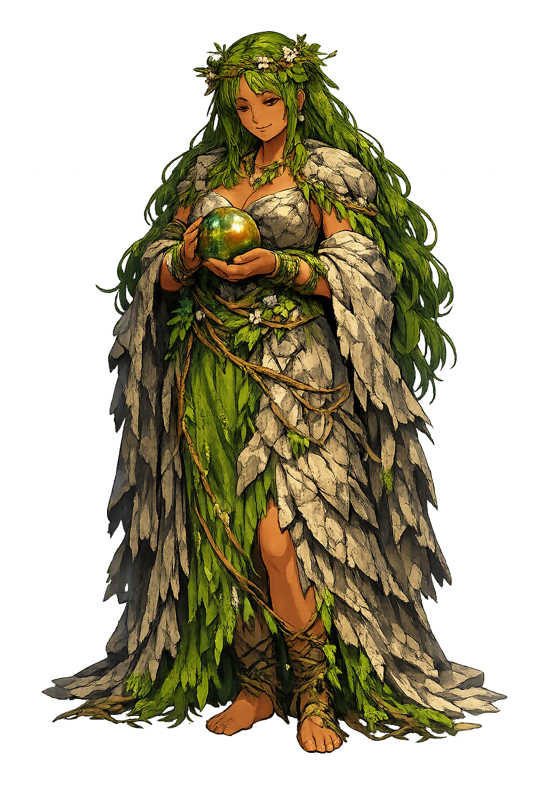
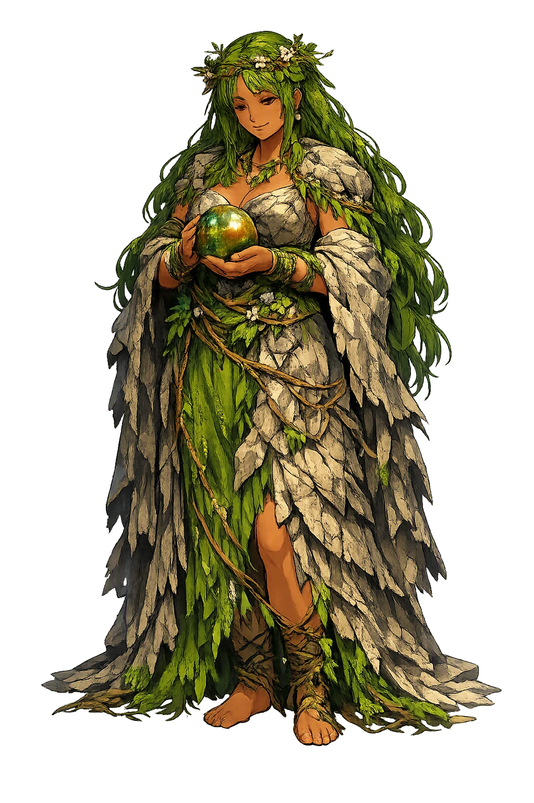

Ancient Domain
Jǫrð belongs to the Norse tradition, where it is associated with earth, mother of thor.
Extended Lore
Etymology · Phonology · Orthography · Cultural Legacy · Primary Sources

From original script to Unicode restoration
Jǫrð is Tier 1 because the Norse form preserves distinctive features that ASCII loses: stress, length, or special characters.
Character-by-character philological analysis
| Character | Unicode | Name | Block | Phonetic Role |
|---|---|---|---|---|
| J | U+004A | Latin Capital Letter J | Basic Latin | Same, capitalized |
| ǫ | U+01EB | Latin Small Letter O with Ogonek | Latin Extended-B | O with ogonek: nasalized vowel |
| r | U+0072 | Latin Small Letter R | Basic Latin | Same |
| ð | U+00F0 | Latin Small Letter Eth | Latin-1 Supplement | Eth: voiced dental fricative |
The Tier 1 classification reflects how much of the original phonology this restoration preserves — stress and vowel length for Greek names, distinctive letters and diacritics for every other tradition.
From ancient cult to modern Unicode
Jǫrð belongs to the Norse tradition, where it is associated with earth, mother of thor.
Jǫrð appears within the Norse tradition and has influenced later retellings, artistic depictions, and scholarly study. The Unicode restoration preserves the name's distinctive orthography for contemporary use.
Jǫrð continues to appear in scholarship, art, and popular reception as a significant figure of the Norse tradition. Restoring the name in Unicode returns the original marks that ASCII removes.
Restoring Jǫrð in a domain name is more than orthographic accuracy. It is a statement that the internet should recognize the full range of human writing — not only the ASCII keyboard.
Common questions about Jǫrð, Earth, Mother of Thor, and Unicode restoration
In reconstructed pronunciation, Jǫrð is /jord/ — approximately 'JORD' — pronounce the restored form with attention to the preserved diacritics and length..
Jǫrð means Earth in the norse tradition.
Jǫrð is associated with Restored Name (The Unicode form Jǫrð carries the original marks of the Norse tradition.), Source Script (Preserved through scholarly transliteration and canonical sources.), Domain (Earth, Mother of Thor), Etymology (Earth).
Plain ASCII jord strips the stress, length, and script that make the name specific. Unicode restoration returns the name to its original written dignity.
Jǫrð is attested in the canonical Norse sources as a figure associated with earth, mother of thor.
The philological foundations of this restoration
Every claim on this page is grounded in established scholarship. The orthographic restorations follow disciplinary convention. The etymological chain follows the best available reference works. This is not invention — it is resurrection through scholarship.
You have traced the name from its earliest attestation to its Unicode restoration. Now return to the myth. The story is where the name lives.
Back to Lore